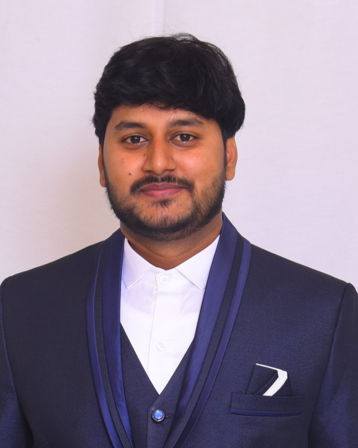

Open to roles in Bengaluru and Dubai
Santhosh ReddyPapireddy
Lead Data Scientist building GenAI, LLM and agentic AI systems
I lead a team of seven data scientists and AI engineers at Accenture (Google XWF), taking generative AI from proof of concept to production: multi-agent orchestration, RAG, and the evaluation and guardrails that make it safe to ship. 9+ years in AI and data science, IIT Madras.

- plannersplit RM request into 4 scenarios
- simulator4 parameter sets run in parallel
- banking-apiportfolio + pricing data fetched
- validatorschema check passed
- rm-reviewsent for human approval
Selected work
Enterprise AI I've designed and delivered across banking, aviation, semiconductors, finance and retail, measured by what changed for the business.
-
Agentic AI deal-generation platform
Architected a multi-agent system on Google ADK and Gemini (Vertex AI) that drafts portfolio deals for Relationship Managers. Defined the orchestration layer, agent hand-offs and error paths, with dynamic schema validation and parallel simulation over concurrent banking APIs, so every recommendation is auditable before an RM signs off.
93%faster deal turnaround, 15 days to 1 -
LLM query routing and RAG
Designed a RAG solution that grounds answers in enterprise knowledge, plus LLM-based query classification and entity extraction whose structured outputs fill the UI according to user intent. Built with prompt engineering and a model evaluation framework.
100%categorisation and UI-population accuracy on the test set -
24/7 support chatbot for a major airline
Led end-to-end delivery of a Dialogflow CX assistant, tuning intent recognition and response orchestration for round-the-clock customer support.
+25%query-resolution accuracy at under 2s latency -
Enterprise chatbot for Samsung Semiconductor
Built multi-turn conversation flows covering products, technologies, support and careers on the Samsung Semiconductor website.
95%query-resolution accuracy -
Location intelligence for UK store expansion
Led a cross-functional team building probabilistic catchment models with supply-demand and demographic analysis, so retail clients could choose new store sites on evidence.
UKretail clients, site selection -
Fault detection and demand forecasting
Designed end-to-end ML workflows across 500+ sensor features for HVAC fault detection, and XGBoost supply-chain forecasting models with careful feature engineering.
89%fault-detection accuracy
Experience
Nine years moving from classical machine learning to leading generative and agentic AI delivery.
-
2024 – now
Lead Data Scientist
Accenture (Google XWF), Bengaluru
- Lead and mentor a team of 7 data scientists and AI engineers delivering GenAI, LLM and agentic AI solutions.
- Set technical direction on architecture, AI quality standards and release readiness with product owners, architects and business SMEs.
- Delivered agentic AI for banking and conversational AI for aviation and semiconductor clients.
-
2021 – 2024
AI Consultant
KPMG Global Services, Bengaluru
- Designed LLM and RAG solutions for finance clients, with evaluation frameworks and structured outputs.
- Led location-intelligence modelling for UK retail store expansion.
-
2017 – 2020
Associate Analyst
Lennox India Technology Centre, Chennai
- Built ML workflows across 500+ sensor features, reaching 89% fault-detection accuracy.
- Built XGBoost supply-chain forecasting models, bringing sales-forecast RMSE down to 11.5.
Skills
Hands-on across the full AI lifecycle, from model selection and prompt design to evaluation, guardrails and production on GCP and Azure.
Generative AI and LLMs
LLM strategy and model selection, prompt engineering, reusable prompt templates, RAG (chunking, retrieval, grounding), structured outputs, GPT, Gemini, Claude, Azure OpenAI, LLM gateways, cost-performance tuning
Agentic AI
AI agents, multi-agent systems, tool calling, LangGraph, LangChain, AutoGen, CrewAI, LlamaIndex, Google ADK
Evaluation and governance
LLM evaluation frameworks, guardrails, hallucination mitigation, human-in-the-loop design, explainability, Responsible AI, AI development lifecycle
Cloud and data
GCP: Vertex AI, Vertex AI Pipelines, BigQuery, Cloud Storage, Dialogflow CX. Azure: Azure OpenAI, AI Foundry, ML Studio. Vector databases: FAISS, Pinecone, Chroma
Machine learning
Regression, classification, clustering, XGBoost, deep learning, transformers, TensorFlow, PyTorch, scikit-learn, NLP, time-series forecasting, geospatial analysis, statistics
Engineering
Python, SQL, FastAPI, Flask, REST APIs, Streamlit, Git, MLOps
Education and certifications
Education
- M.Tech, Applied MechanicsIIT Madras, 2015 – 2017
- B.Tech, Mechanical EngineeringJNTU Anantapur, 2009 – 2013
Certifications
- Generative AI LeaderGoogle Cloud
- Associate Data PractitionerGoogle Cloud
- Build and Operate ML SolutionsMicrosoft
Recognition
- Quarterly and bi-monthly awardsFor AI solution delivery, ethical AI practice and project execution
Let's talk about your AI roadmap
I'm looking for Lead or Principal roles in GenAI and agentic AI, in Bengaluru or Dubai. Happy to relocate to the UAE.
- santhosh49reddy@gmail.comEmail
- Message me on WhatsAppWhatsApp
- in/santhoshreddy39LinkedIn
- Bengaluru, India (IST, UTC+5:30)Location